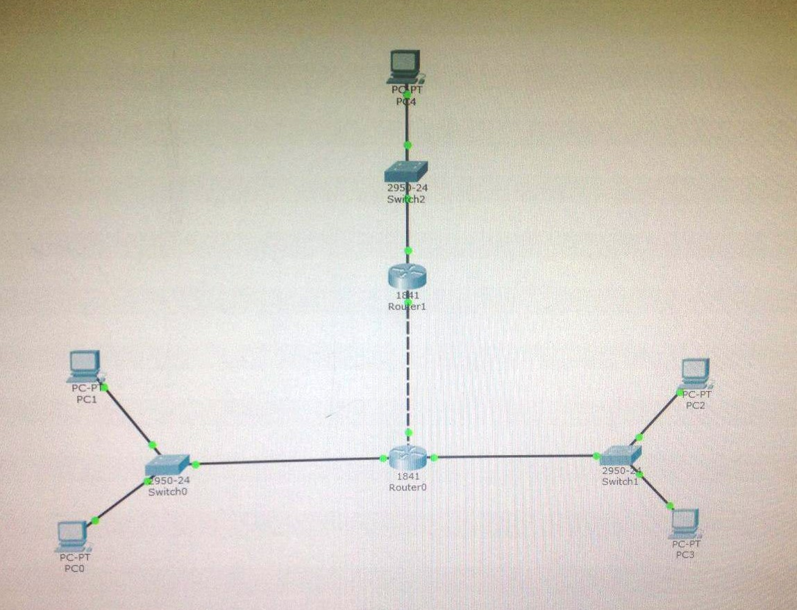

Лабораторная работа №1
Экосистема разработки программ с открытым кодом
- Создана личная страница с использованием html/css. Произведена работа с git и github
Лабораторная работа №2
Разработка простого веб-приложения
- Реализована мини-игра с использованием html, css, js , jQuery. Название игры: Пятнашки
- Реализована модель Хищник-жертва
В команде занимался разработкой приложений.
Лабораторная работа №3
Работа с симулятором Cisco Packet Tracer и Cisco IOS.
